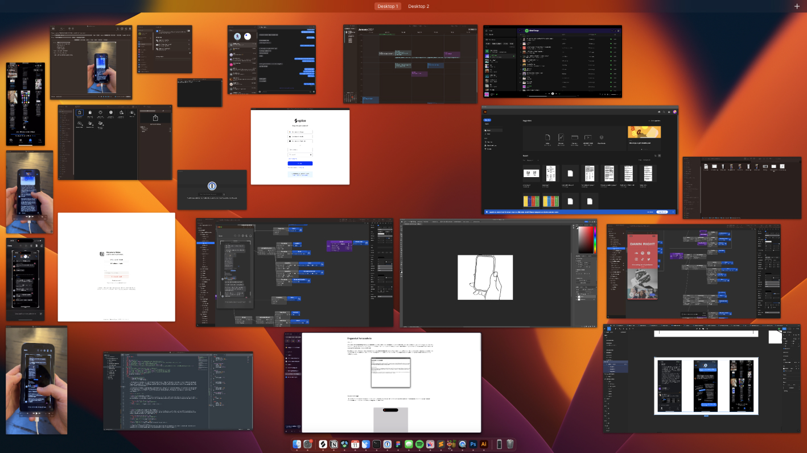
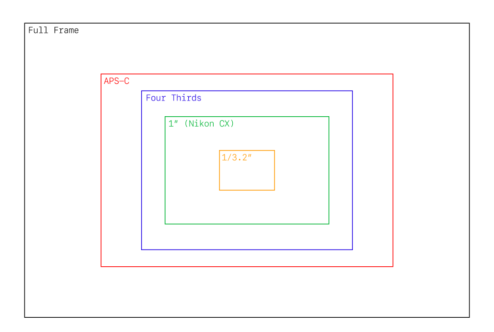

2024.01.09
Screenshots are an important part of digital communication. They can be used as reminders to visit revisit an Instagram ad, a to-do from a group of messages, or a faster way to communicate ideas without having to rewrite it in a text box. The simplicity and immediacy of a screenshot with its ability to convey context-rich information makes it an indispensable tool in our screen oriented world.
Screenshots are better than text
If pictures are worth a thousand words, screenshots are a snapshot of a thousand contexts. We screenshot not just because of its information, but also due to its container, history, and archival abilities. If a photo is a snapshot in time and a memory, a screenshot is a digital bookmark capturing the precise details and context of our virtual exploration.
Screenshots are light
The benefit of a screenshot is that you can quickly share it. What would previously take countless steps to write down the information in a text bubble, people can now automatically and quickly send a screenshot through the iOS share sheet.
fig. 1. Apple screenshot share screen
Multiple screenshots are a hassle to deal with
While screenshots are a valuable tool to quickly communicate information and context, it is difficult to share these ideas if you want to capture something really large. You can screenshot multiple times, but every new screenshot makes the content heavier and bloats the consumption experience.
fig. 2. Capturing multiple screenshots on iMessage
fig. 3. Multiple screenshots cause bloat when sharing
Physical limitations
Traditionally viewfinders only show the available space that can be captured by the sensor. Sensors are limited by the mechanics of the physical world. Such a constraint doesn't exist in digital space.
fig. 4. Different camera sensors
fig. 5. Apple camera sensor
A digital viewfinder
Somewhere along the way, screenshots took the ideas from a traditional viewfinder and applied it to the screenshot by limiting the max size to the size of the physical screen. Since there are no limitations of a physical sensor for a screen, the canvas is infinite. I think it's time to question why we need to limit the screenshot viewfinder to a limited space.
What if you could long press the screenshot buttons to enable a live-view stitching tool?
Instead of capturing the current screen through the physical viewfinder of the device, what if you could interact with the digital space and stitch together your own screenshot? The viewfinder is no longer a snapshot, but a tool to be used to capture anything in the digital space.
fig. 6. Being able to stitch sections of the screen together